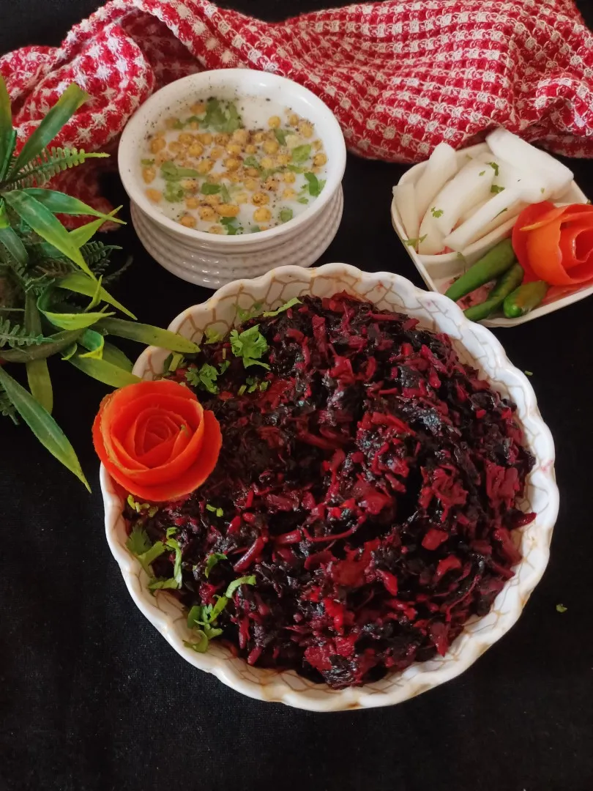

Lal Bhaji

Lal Bhaaji or Red Amaranth is a iron rich healthy vegetable that I’ve loved since I was a kid.
Ingredients
- Lal Bhaji / Red Spinach / Red Amantha
- tomatoes
- onions
- Garlic
- Coriander Powder
- Red Chilli Powder
- Olive Oil
- Rai
- Green Chilli
METHOD
- Wash, drain and finely slice red bhaji.
- Heat oil, add rai, chopped garlic and khadi lal mirch…and burn the chillies slightly. This burnt chaunk adds a smokiness to the dish which is very distinctive.
- Add chopped eggplant/baingan and cook till soft.
- Now gradually add the finely chopped bhaji, adding more, as it shrinks down with the heat, till all the bhaji is incorporated.
- Add chopped tomatoes, red chilli pwdr, coriander powder (optional) and salt to taste.
- Cover & cook till the tomatoes melt into the bhaji.
- Remove cover, cook to reduce juices and concentrate flavors.
- However do not make the bhaji too dry, I like to keep the texture moist.
ENJOY WITH STEAMED HOT RICE.
Go Back to Home